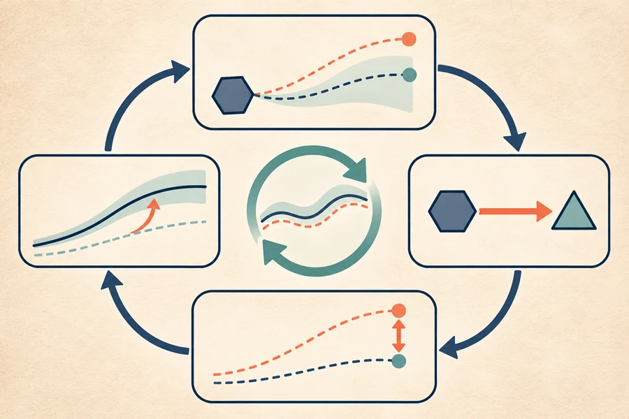
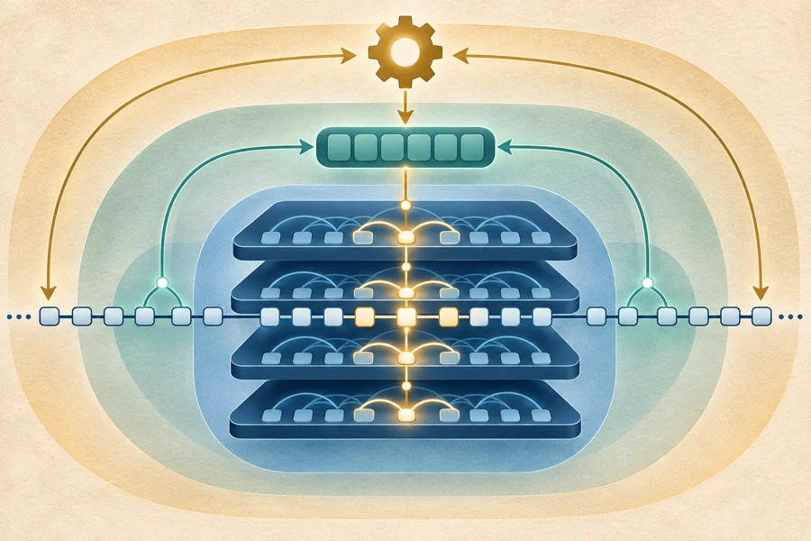
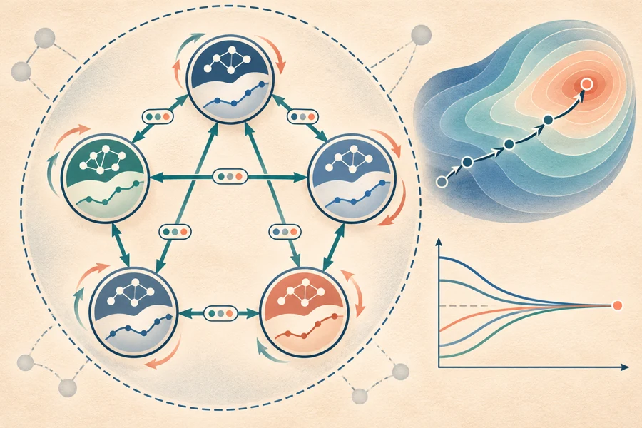
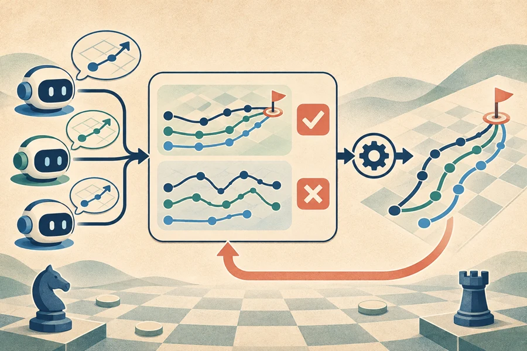
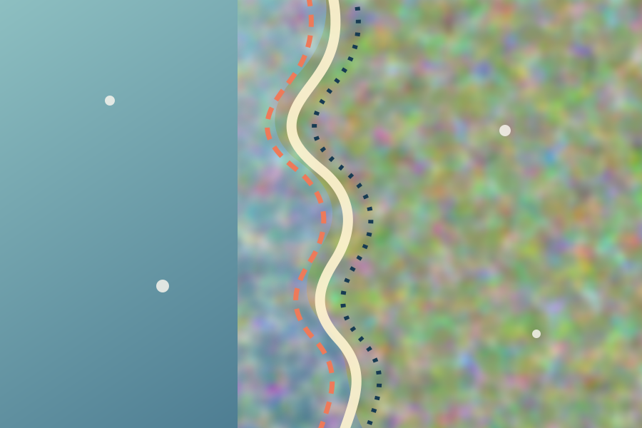
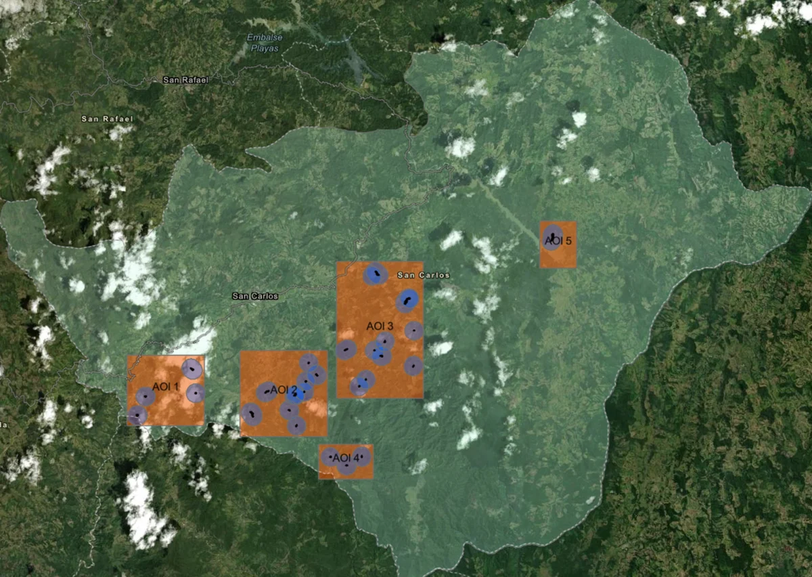

Recursive Self-Improvement via On-Policy Distillation for Reasoning
A recursive framework in which a privileged teacher co-evolves with the student, combining dynamic co-evolution with concise self-refinement for stronger mathematical reasoning.
I am a PhD student in Electrical Engineering & Computer Science at the University of Southern California, working in the Center of Autonomy & Artificial Intelligence. I am advised by Rahul Jain.
My research studies AI agents that learn and adapt after deployment, connecting LLM post-training, multi-agent game theory, test-time adaptation, and systems optimization. I currently work with Meta Superintelligence Lab (FAIR), after research roles at Microsoft Research and Samsung Research America.
Previously, I studied at the MIT Operations Research Center with Dimitris Bertsimas, and at UC Berkeley, where I worked with James Demmel, Saul Perlmutter, and Jiahao Yao.

Venue tags on works under review identify the submission venue. Images are drawn from linked work when available; concept thumbnails illustrate unpublished projects.
A recursive framework in which a privileged teacher co-evolves with the student, combining dynamic co-evolution with concise self-refinement for stronger mathematical reasoning.

An evaluation framework that records update histories and separately measures acquisition, retention, locality, and generalization in models that learn at test time.

An equilibrium concept combining correlated and quantal response equilibria to model mixed human-AI strategic play, with existence, computation, and empirical results.

System identification with long-range memory and a practical estimator with non-asymptotic guarantees for learning fractional-order dynamics from one trajectory.

Existence results for generalized quantal response equilibria and a decentralized no-regret learning algorithm using noisy bandit feedback.

Posterior sampling in unknown finite-horizon zero-sum Markov games, with regret guarantees for symmetric learning and arbitrary opponents.

Topology-conditioned neural sampling for specular light transport, improving rendering error and stability across fourteen scenes.

A residual-stability framework for acting against imperfect opponent models, using prediction errors to correct behavior without destabilizing the learning loop.

A hierarchical approach to test-time adaptation that coordinates fast local updates, working memory, and slower model changes across long contexts.

A cooperative-game formulation for populations of self-evolving agents whose policies and shared knowledge adapt under bounded context.

Preference optimization for strategic multi-agent reasoning, aligning language-model policies through comparisons shaped by interacting opponents and collaborators.

An automated remote-sensing workflow for extracting forty years of shoreline positions and quantifying erosion and accretion along Bangladesh's southeast coast.
Improves min-entropy evaluation for laser phase-noise generators and accelerates Toeplitz-matrix post-processing with fast Fourier transforms.
Detects straight periodic streak artifacts through their frequency-domain structure and removes them while preserving the underlying image.

Machine-learning analysis of pre- and post-clearance satellite imagery to identify buildings, roads, and land cover and support evaluation of mine-action interventions.

Researching post-training, multi-teacher distillation, test-time training, efficient KV-cache architectures, and persistent long-context adaptation.
Mentors: Mark Ibrahim, Hamed Firooz, Rui Liu, Luke Simon, Yuchen Lu, and Chongyang Bai

Developed learning frameworks for populations of self-evolving AI agents while studying systems optimization for heterogeneous AI infrastructure.
Mentors: Ricardo Bianchini, Rodrigo Fonseca, Haoran Qiu, Fiodar Kazhamiaka, and Alok Kumbhare
Built agentic systems for reducing hallucinations and studied preference-based post-training, evaluation, and multi-agent reasoning.
Mentor: Li Li
Built personalized AI systems and post-trained language models using interactions from more than 100 users and over 1,000 documents.
Advisor: Tianyi Peng
Researched data-specific training and evaluation metrics for deep learning in investment applications.
Developed algorithms for multi-agent game theory, language-model post-training, and autonomous systems.
Advisor: Dimitris Bertsimas
Researched model compression, routing for federated learning, and approximation algorithms for difficult optimization and online-learning problems.
Advisor: James Demmel
Advisor: Rahul Jain